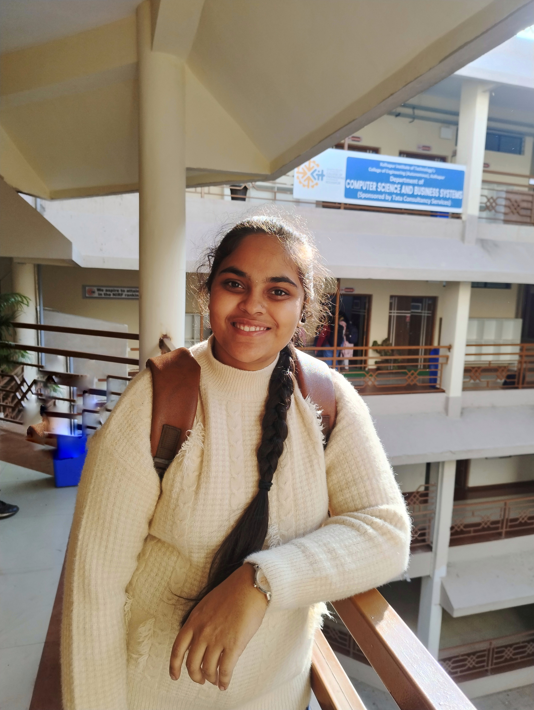

✨ Creative Coder | Web Developer | IoT Explorer
✨ Creative Coder | Web Developer | IoT Explorer
I'm Mayuri Konnuri, a Second Year Artificial Intelligence and Machine Learning (AIML) student at KIT Engineering College. I’m passionate about creating intelligent solutions using AI and web technologies. With a strong curiosity for innovation, I enjoy solving real-world problems through smart systems and data-driven applications. I aspire to become a skilled full-stack developer and AI engineer who builds impactful, future-ready solutions.
A modern, responsive personal portfolio website designed to showcase my projects, technical skills, education, and career goals using HTML, CSS, and JavaScript.
As an aspiring AIML Engineer, my goal is to create intelligent systems that improve lives and solve meaningful problems. I aim to gain deep expertise in machine learning, data science, and neural networks, and apply them to real-world domains like healthcare, education, and automation. My long-term vision is to become a leading AI innovator, building ethical, scalable, and impactful solutions that shape the future of technology.
KIT Engineering College , Kolhapur
2024 – 2028Sadhana Junior college , Gadhinglaj
2022-2024Creative High School
2021-2022